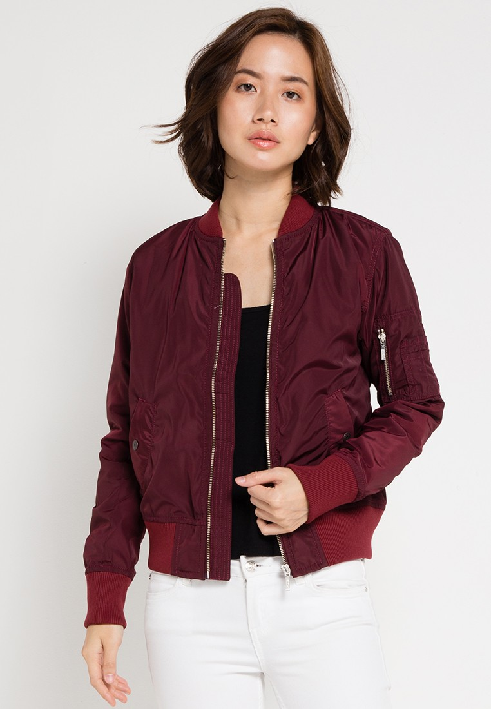
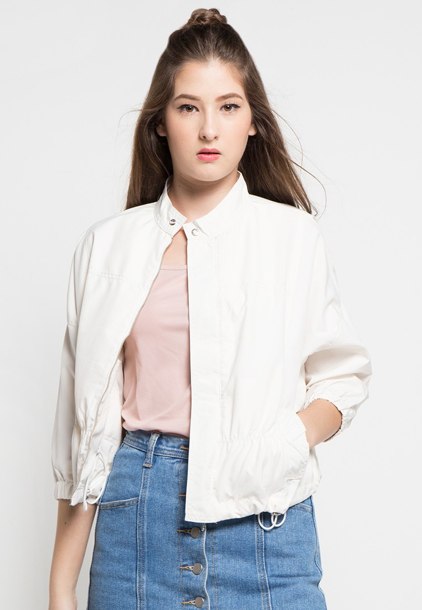

GALLION
Halaman Utama
Fashion
Pakaian
Aksesoris
Desainer
Tips
Tutorial
Tentang Kita
Kontak
Search
Fashion
Pakaian

JAKET
Wanita selalu tak bisa lepas dari yang namanya mode. Mereka selalu berusaha tampil lebih modis dan menarik dengan pakaian yang ia kenakan. Tren fashion tentu saja sudah menjadi sorotan bagi semua kalangan terutama wanita. Entah itu pakaian santai hingga pakaian yang resmi juga perlu diperhatikan agar penampilan terlihat lebih rapi dan modis.Pemilihan pakaian itu sendiri biasanya disesuaikan dengan musim yang sedang berlangsung. Ketika musim sedang tidak menentu tentunya Anda membutuhkan pakaian yang bisa menjaga kesehatan Anda yaitu jaket untuk wanita ataupun mantel wanita. Terlebih saat Anda bekerja dan harus pulang malam hari pastinya Anda membutuhkan jaket.
Bermacam Model Jaket Wanita yang Modis
- Jaket dengan bahan jeans dan kancing depan. Dengan mengenakan jaket wanita ini Anda bakalan terlihat lebih modis sebab bahan jeans ini mampu memberikan kesan yang modern.
- Jaket dengan bahan parasut. Bagi Anda pecinta bahan parasut, kini telah hadir jaket yang menarik dengan bahan dari parasut. Jaket ini cocok sekali jika Anda gunakan saat sedang berkendara sepeda motor dna aktivitas lainnya. Anda akan merasa hangat dan anti air dengan menggunakan jaket ini.
- Jaket wanita model long coat. Dengan pemilihan warna jaket yang natural sudah pasti akan membuat tampilan Anda terlihat lebih modis. Jika Anda memiliki warna kulit yang terang sebaiknya Anda memilih jaket dengan warna yang cerah. Dengan memilih warna yang cerah pastinya bisa membuat Anda terlihat lebih ceria dan juga fresh.
Model jaket terkini :
